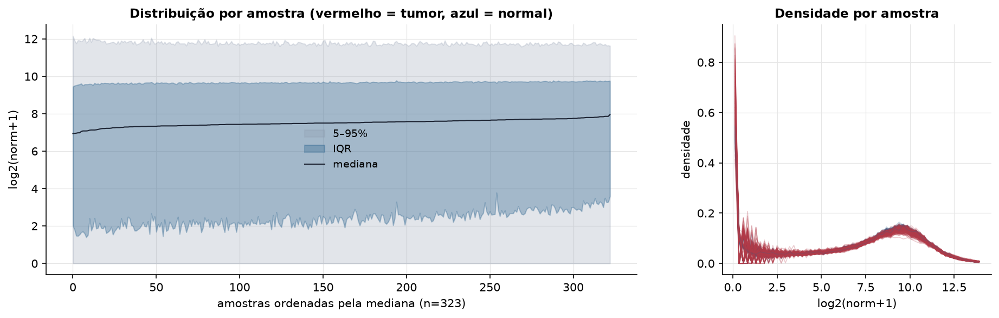
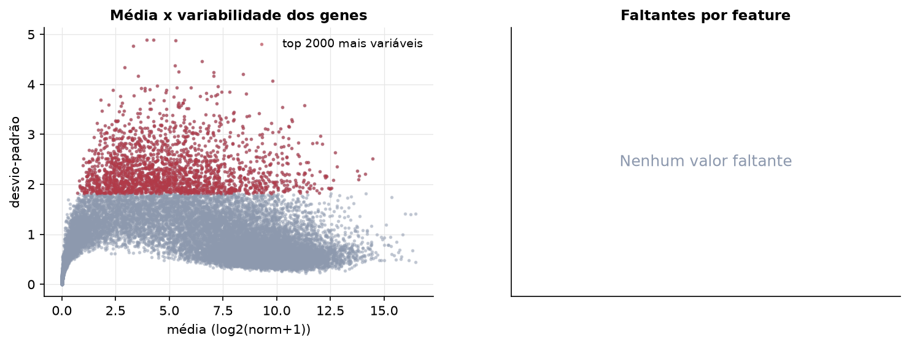
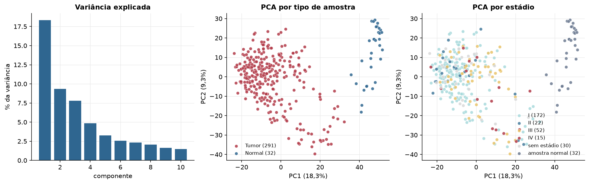
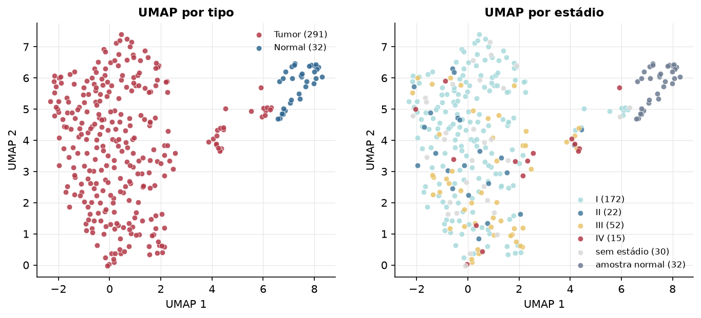
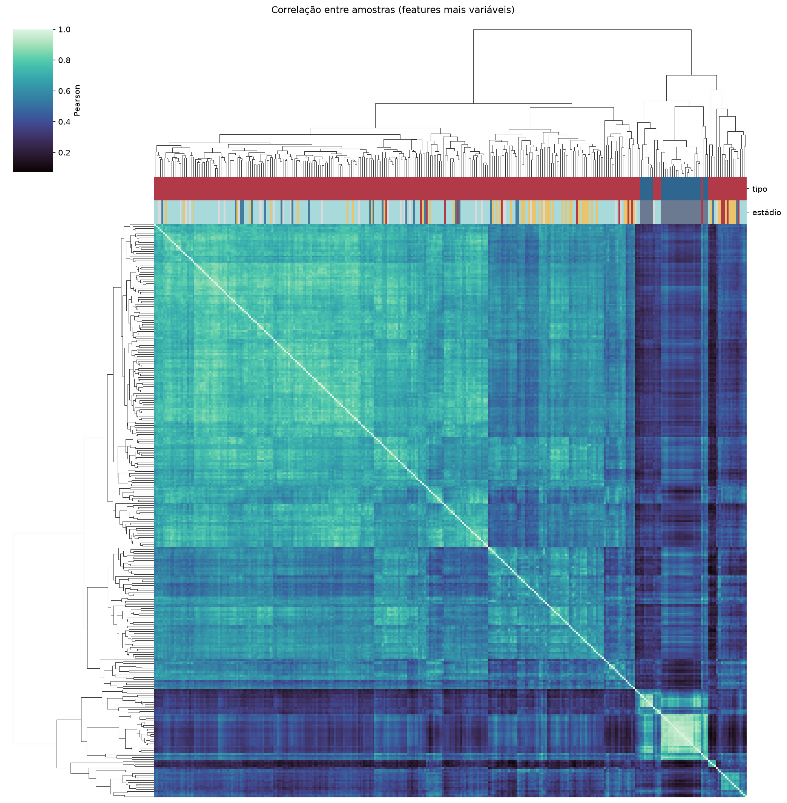
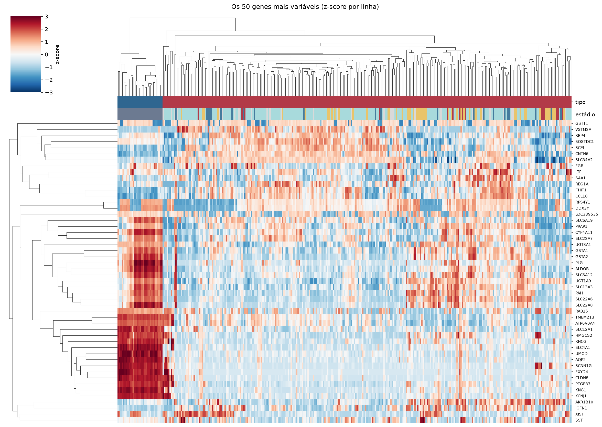
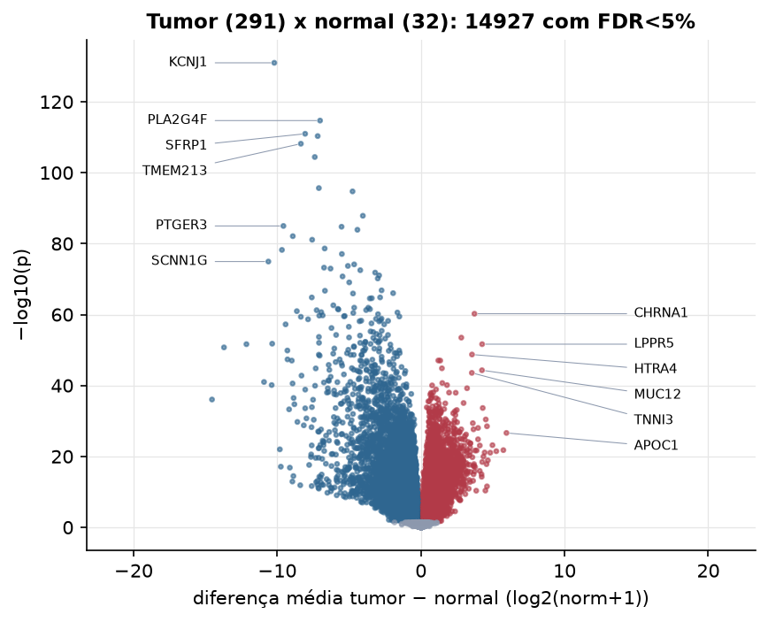
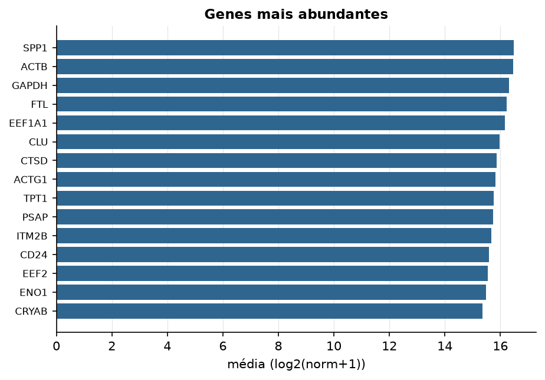

KIRP · RNA-seq (PanCanAtlas)
Illumina HiSeq, RSEM normalizado e corrigido por lote (EB++), log2(x+1) · gerado em 21/10/2026 22:58
20.531genes
291amostras tumorais
32amostras normais
0,0%valores faltantes
Fonte: PanCanAtlas EB++ via API do Xena
Estes valores já vêm normalizados e com correção de lote entre plataformas e centros. Servem bem para modelos gaussianos ou redes neurais; para um modelo de contagem use as contagens brutas do GDC.
Principais resultados
- 20.531 genes medidos em 323 amostras (291 tumorais e 32 normais); 0,0% dos valores estão faltando.
- Os dois primeiros componentes principais explicam 18,3% e 9,3% da variância das features mais variáveis.
- Correlação mediana entre amostras: 0,58.
- Tumor x normal: 14927 genes diferentes com FDR < 5% (7103 maiores no tumor, 7824 maiores no normal; 32 pacientes têm o par tumor-normal).
- Mais aumentados no tumor: CHRNA1, TPK1, LPPR5, HTRA4, VAT1, APOC4, DAGLB, MUC12.
- Mais reduzidos no tumor: KCNJ1, PLA2G4F, SFRP1, ATP6V0A4, TMEM213, HSD11B2, GGT6, MECOM.
- Associações clínicas com p < 0,05 nos componentes principais: PC1 com estádio (p=3.1e-07); PC2 com estádio (p=0.001); PC1 com sexo (p=1.2e-08); PC3 com sexo (p=0.0017); PC2 com idade (p=0.033); PC1 com sobrevida (p=2.6e-06).
- Em mediana, 80,5% dos genes têm expressão acima de log2(norm+1)=1 em cada amostra.
Distribuição dos valores


Estrutura das amostras




Tumor x normal

Features mais diferentes entre tumor e normal
| diferenca_tumor_menos_normal | t | p | fdr | |
|---|---|---|---|---|
| KCNJ1 | -10.207 | -56.292 | 1.05e-131 | 2.12e-127 |
| PLA2G4F | -7.02 | -43.424 | 2.02e-115 | 2.05e-111 |
| SFRP1 | -8.058 | -43.199 | 1.07e-111 | 7.2e-108 |
| ATP6V0A4 | -7.186 | -36.128 | 4.73e-111 | 2.39e-107 |
| TMEM213 | -8.356 | -42.35 | 6.83e-109 | 2.76e-105 |
| HSD11B2 | -7.387 | -45.544 | 3.8e-105 | 1.28e-101 |
| GGT6 | -7.104 | -35.199 | 2.2e-96 | 6.36e-93 |
| MECOM | -4.759 | -35.008 | 1.88e-95 | 4.76e-92 |
| PAK6 | -4.042 | -31.935 | 1.41e-88 | 3.17e-85 |
| PTGER3 | -9.571 | -45.065 | 1.04e-85 | 2.11e-82 |
| CKMT2 | -5.524 | -30.64 | 1.74e-85 | 3.2e-82 |
| KIAA2022 | -4.42 | -32.052 | 1.26e-84 | 2.12e-81 |
| SLC9A4 | -8.918 | -63.453 | 7.93e-83 | 1.23e-79 |
| PROM2 | -7.571 | -37.981 | 8.07e-82 | 1.17e-78 |
| TMEM72 | -6.699 | -36.498 | 2.38e-79 | 3.21e-76 |
| CLDN8 | -9.674 | -51.765 | 5.94e-79 | 7.51e-76 |
| TMPRSS2 | -5.503 | -34.731 | 8.4e-78 | 9.99e-75 |
| SCNN1G | -10.618 | -52.926 | 1.14e-75 | 1.28e-72 |
| LRRC2 | -4.646 | -31.739 | 7.19e-75 | 7.65e-72 |
| TCF21 | -5.083 | -32.402 | 1.95e-74 | 1.97e-71 |
| GRHL2 | -6.744 | -35.684 | 5.98e-74 | 5.76e-71 |
| CA10 | -6.291 | -35.386 | 1.09e-73 | 1e-70 |
| TSPAN5 | -4.222 | -28.638 | 3.14e-73 | 2.76e-70 |
| TFCP2L1 | -3.186 | -28.347 | 1.48e-72 | 1.25e-69 |
| MEIS2 | -2.909 | -26.854 | 9.11e-72 | 7.37e-69 |
| TFAP2A | -5.455 | -29.012 | 1.79e-71 | 1.39e-68 |
| ARHGEF15 | -3.005 | -35.34 | 6.73e-71 | 5.04e-68 |
| TMEM30B | -4.989 | -27.171 | 8.58e-70 | 6.2e-67 |
| GPRC5B | -2.739 | -26.616 | 1.51e-67 | 1.05e-64 |
| CASR | -6.681 | -34.582 | 1.95e-67 | 1.32e-64 |
Associação com variáveis clínicas
p-valores da associação dos três primeiros componentes principais (só tumores) com estádio (Kruskal-Wallis), sexo (Mann-Whitney), idade (Spearman) e sobrevida global (Cox univariado).
| estádio (Kruskal) | sexo (Mann-Whitney) | idade (Spearman) | sobrevida OS (Cox) | |
|---|---|---|---|---|
| PC1 (13,8%) | 3.06e-07 | 1.22e-08 | 0.146 | 2.59e-06 |
| PC2 (9,5%) | 0.001 | 0.831 | 0.033 | 0.666 |
| PC3 (5,5%) | 0.256 | 0.002 | 0.142 | 0.739 |
Mais abundantes
